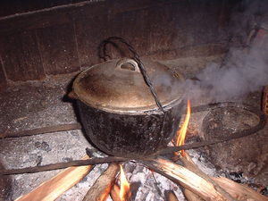

kalè1 
/kalɔʔ/
“frying_pan”
n.
a frying pan or wok
Ka seini ne lalag iyan sika se hilutuanan te me gulay su meupiya su masikeung wey maluag se be-bè.
Keilangan ne egbeli ki te kale su egkagamiten ta seini te pegguhulay.
We need to buy a frying pan for we use it for cooking vegetable.
Wrd.Gloss: frying_pan
Eng. frying pan; wok; pan
Tag. kawálì
Ceb. kaláhà
Ilo.: páryok
OCM: Utensils (415)
Online dict status: -
Usage level: M
1.
vi.
for something, e.g., a pan of water (egkalè-kalè, migkalè-kalè/inkalè-kalè, kale-kale, eg><ø-rdpRT-) to boil (egkale-kalean, inkale-kalean/migkale-kalean/pigkale-kalean, location, eg><an-rdpRT-)
Cult. Stage 2 in cooking rice
Egkale-kalè e ka weyig.
The water is already boiling.
Eng. boil
Tag. maglága
Ceb. maglàgà; magbukal
Ilo.: aglíngta
OCM: Food Preparation (252)
DDP: Water quality (1.3.6)
Online dict status: -
Usage level: M
v.
for something, e.g., a pan of water (egpakakalè-kalè, nakakalè-kalè, agent, egpAkA-rdpRT-) to cause something boiling, or to be a thing (igpakakalè-kalè, inpakakalè-kalè, reason, igpAkA-rdpRT-) which causes something boiling
Eng. boil
Tag. maglága
Ceb. maglàgà; magbukal
Ilo.: aglíngta
OCM: Food Preparation (252)
Online dict status: -
Usage level: M
Updated by: RJH,AAA,RJH,QDL,NJK,RAA
Last updated: 16/Nov/2009
"pakalkaleen" in healthbook "Mania teg pakapatey kag iindes?"
"egkale-kale" in healthbook "Mania teg pakapatey kag iindes?"
"egpakalkaleen" in healthbook "Mania teg pakapatey kag iindes?"
This page last updated: 19/May/2012
Copyright © 2009-2010, Matigsalug Language Christian Association, Inc